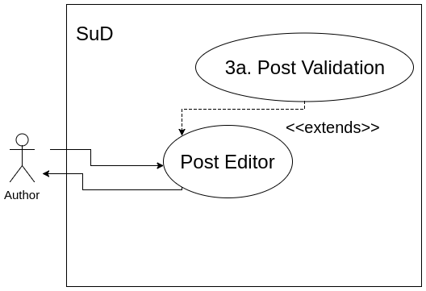

Title: Post Editor
Primary Actor: Author
Stakeholders and Interests:
Author - wants to write up a post / edit a previous post
Precondition: Author is logged into the platform.
Trigger:
- Author fills in the post title
- Author fills in the post body, with access to a set of formatting tools for fonts and blocks
- Author selects their preferred discussion group for the post, with the discussion group defaulting to "None"
- Author publishes/submits the post
- Data is passed to the backend, where the post is created or modified if it already exists
- Author is redirected to the published post
Extensions:

- 4a. Author submits an empty post
- 2a1. Reject publishing the post
- 2a2. Return to the post editor page with a note stating that the post can not be empty.